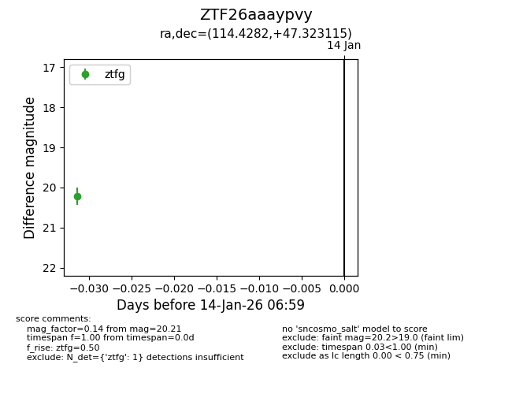
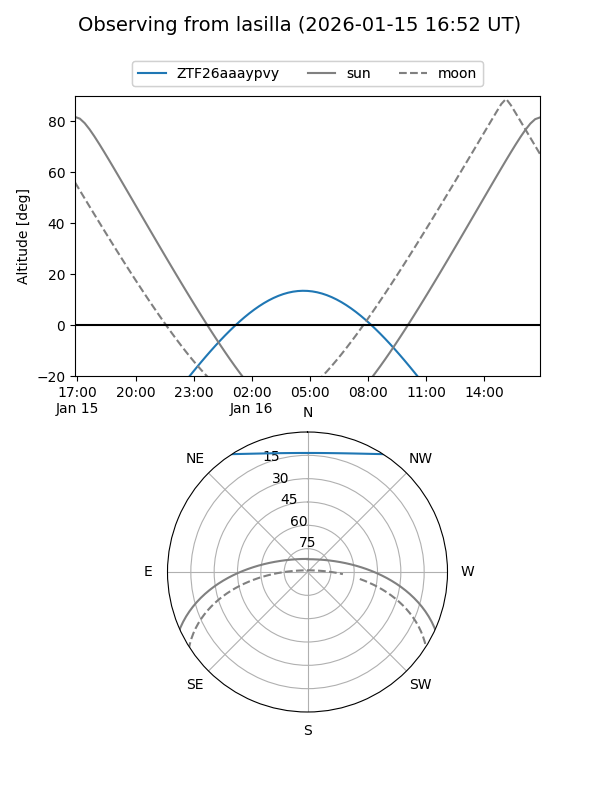
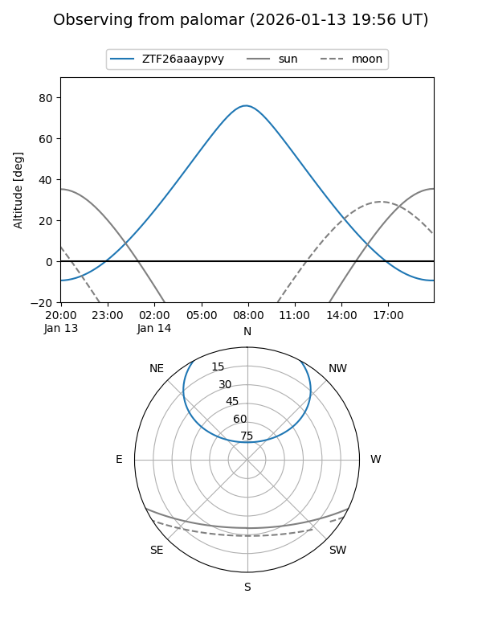

ZTF26aaaypvy
Target ZTF26aaaypvy at 2026-01-14 07:00
Aliases and brokers:
FINK: link
Lasair: link
ALeRCE: link
alt names
ZTF26aaaypvy (ztf,fink_ztf)
Coordinates:
equatorial (ra, dec) = 114.4282,+47.32312
equatorial (HMS+DMS) = 07:37:42.78,+47:19:23.22
galactic (l, b) = (171.2013,+27.14346)
Flags:
Photometry:
last ztfg=20.21
1 ztfg detections
Lightcurve

Visibility


Additional plots